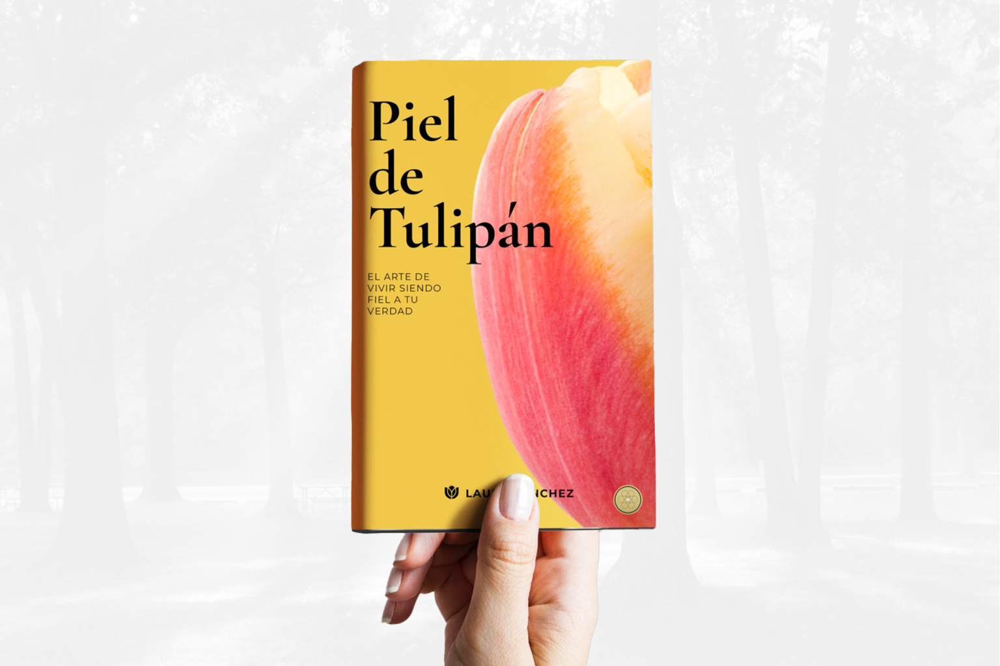
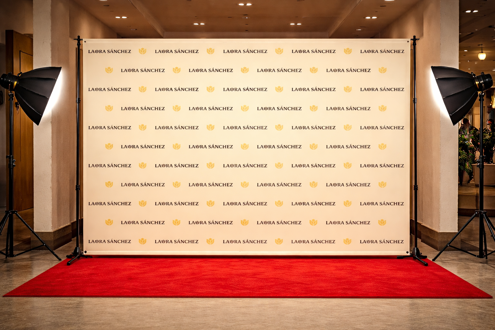

Brand Identity Case Study
Laura Sanchez
A personal identity system built around expressive typography and a tulip mark symbolizing beauty, growth, renewal, and artist-first storytelling.

06 / Applications
Brand in the Real World
A curated set of applications showing how the identity system holds up across publishing, event, merch, and social.

Book Cover
A focused front cover built to feel timeless, poetic, and unmistakably Laura.

Step & Repeat
Pattern consistency and spacing that stays premium on-camera and in photos.
Social System
A repeatable social presence built around poetic language, bilingual storytelling, and visual restraint.

Book Release Cover
A release moment designed to feel editorial, premium, and shareable.

Speaker Flyer
A flexible promo layout designed for both print and digital.

Merch Tote
The tulip mark scales cleanly for a simple, wearable brand moment.
Application Guidance
- Consistency: Keep Alverata for display moments and Lato for supporting copy.
- Clarity: Prioritize readable hierarchy and spacing at every scale.
- Recognition: Repeat the tulip mark strategically for brand memory.